Custom Design
A layout designed around the business, its services, customers, and goals.
Web Design / Optimization
Modern websites built to help businesses look credible, load fast, get found, and turn visitors into real leads.
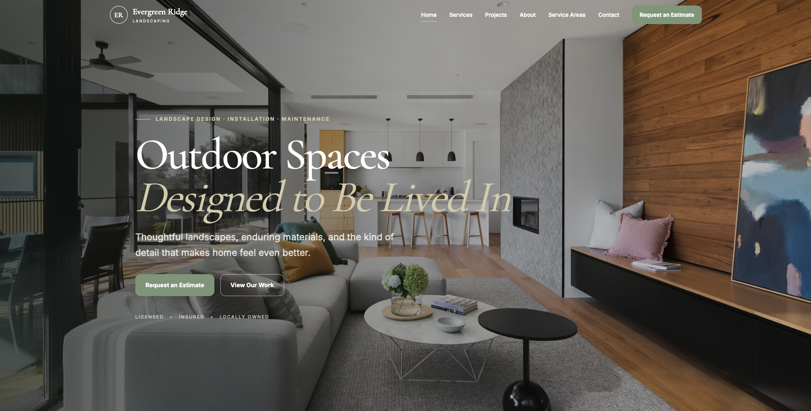
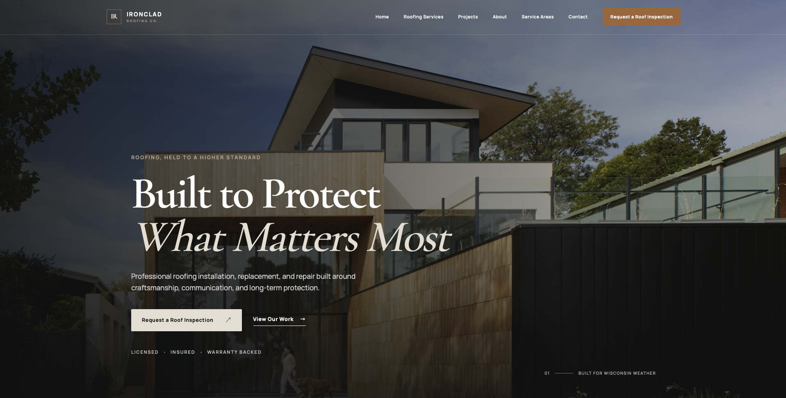
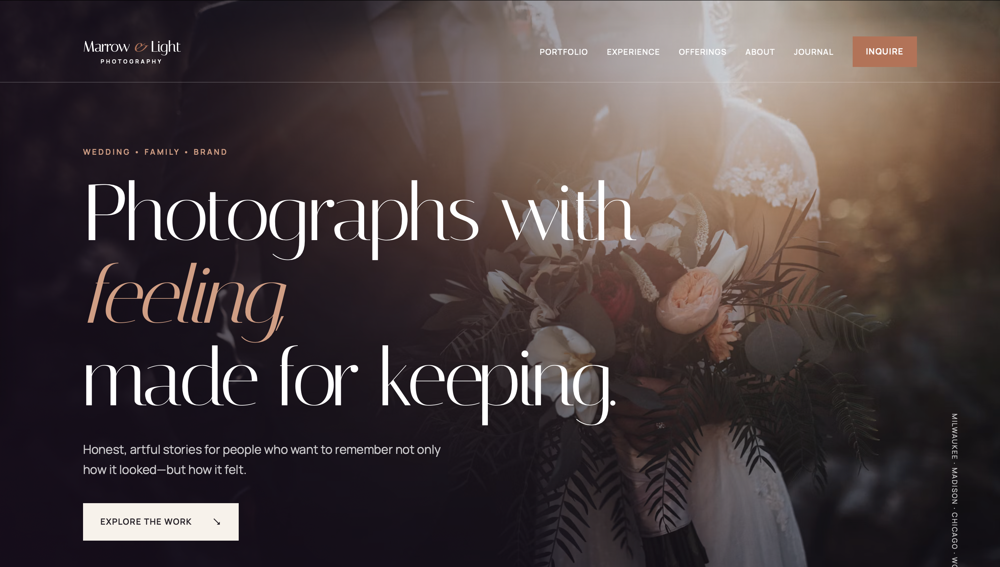
Every Project
A website should do more than look good. Each build starts with the fundamentals needed to make a business easier to find, trust, and contact.
A layout designed around the business, its services, customers, and goals.
Built to work cleanly across phones, tablets, laptops, and larger screens.
Search-focused structure, metadata, page hierarchy, and content organization.
Lightweight pages, optimized images, and cleaner performance across devices.
Clear calls to action and contact paths designed around getting inquiries.
Final testing, deployment assistance, and support getting the site online.
The Process
A simple process keeps the project moving without turning the build into something confusing or unnecessarily complicated.
Learn the business, customer, services, competition, and goals.
Create the structure, visual system, content flow, and responsive site.
Test performance, refine SEO, connect forms, and publish.
Website Demos
Each concept is shown across four important parts of the customer journey — from the first impression to the final call to action.
A conversion-focused website built to establish trust quickly, explain services clearly, and move local customers toward requesting a quote.
Clear positioning, strong visual hierarchy, and an immediate primary action.
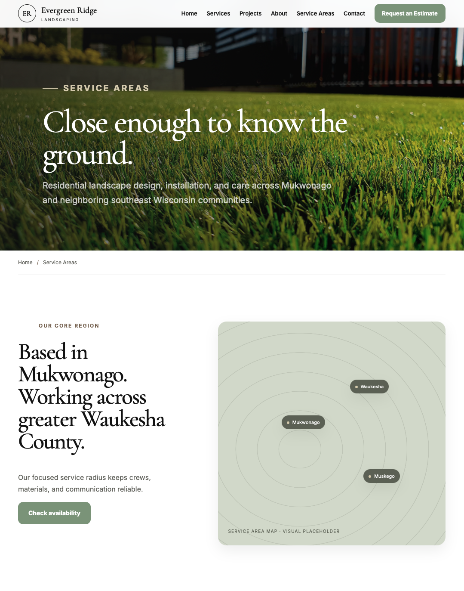
Services are organized so customers quickly understand what the business actually provides.
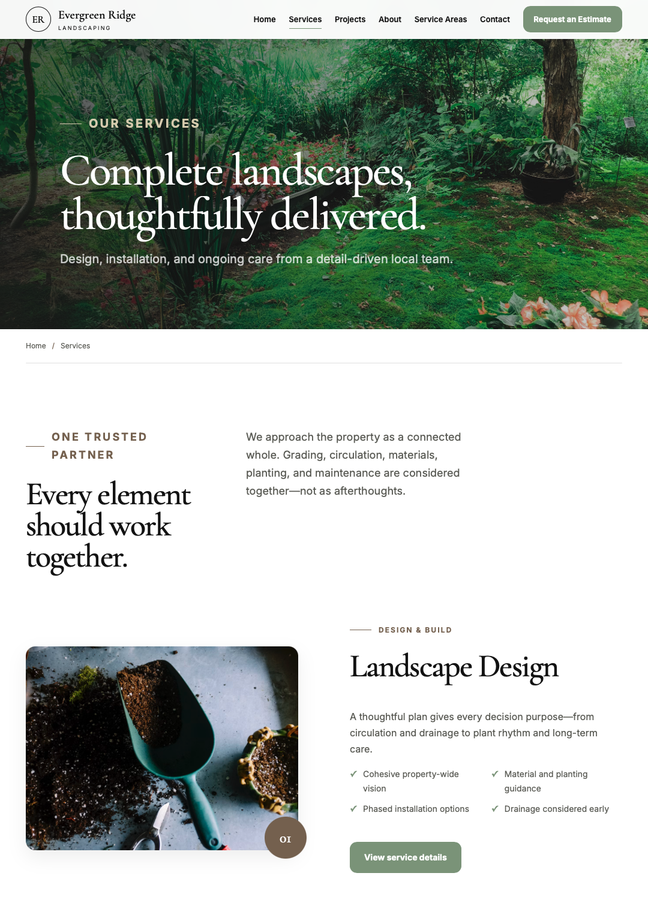
Projects, reviews, experience, or company information gives the visitor a reason to trust.
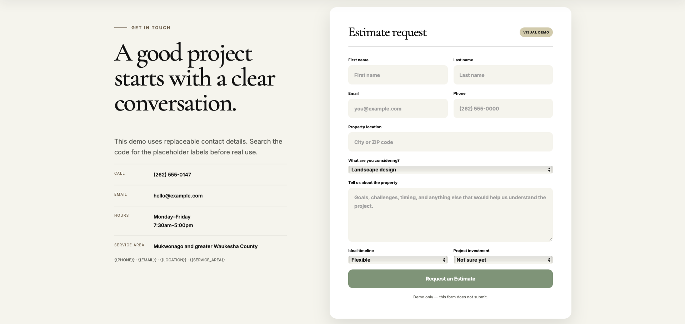
A simple contact path gives interested customers a clear next step.
A more visual website experience centered around project photography, premium presentation, clear services, and homeowner inquiries.
Strong photography and clear positioning establish the level of work immediately.
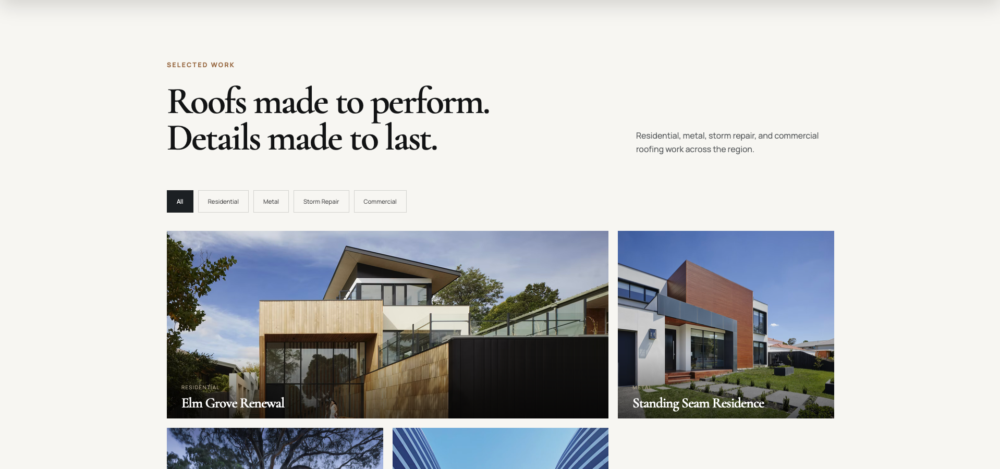
Services are presented visually instead of relying on long blocks of text.
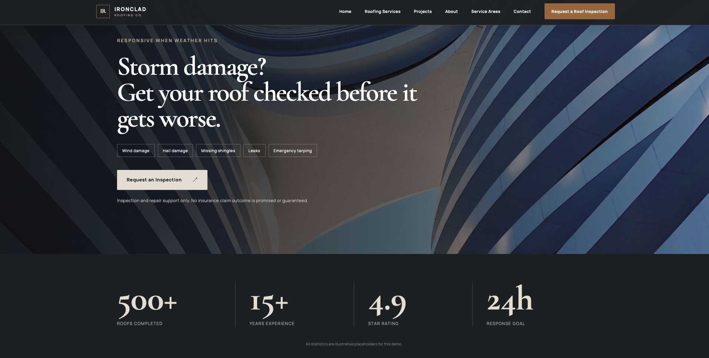
Finished projects help customers visualize what the company could create for them.
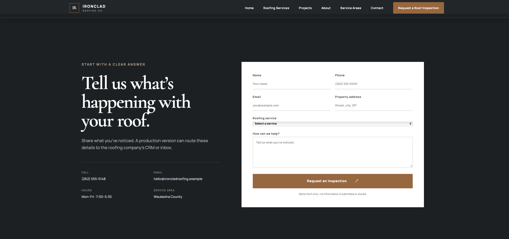
Interested homeowners finish with a clear, low-friction way to get started.
A bold, image-led website for a company where branding, presentation, and visual identity are major parts of the buying experience.
The opening immediately communicates the personality and visual direction of the brand.
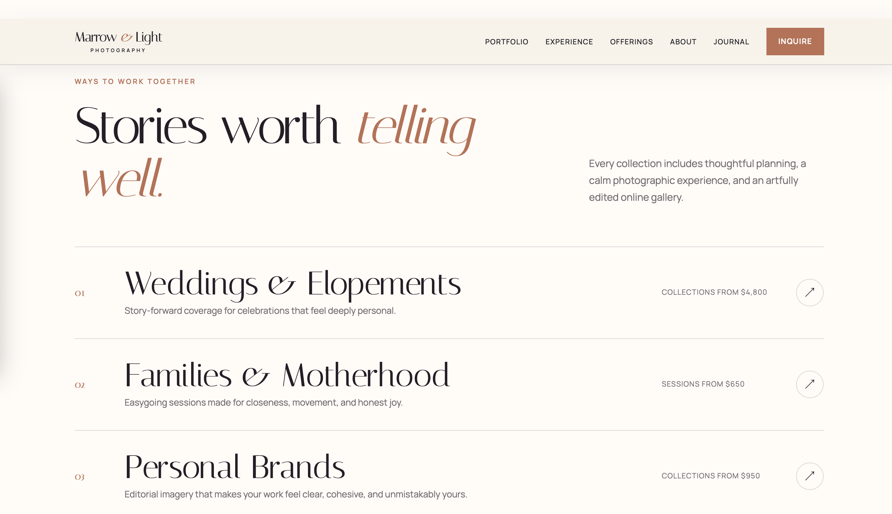
Strong hierarchy keeps the service or product understandable without losing the visual style.
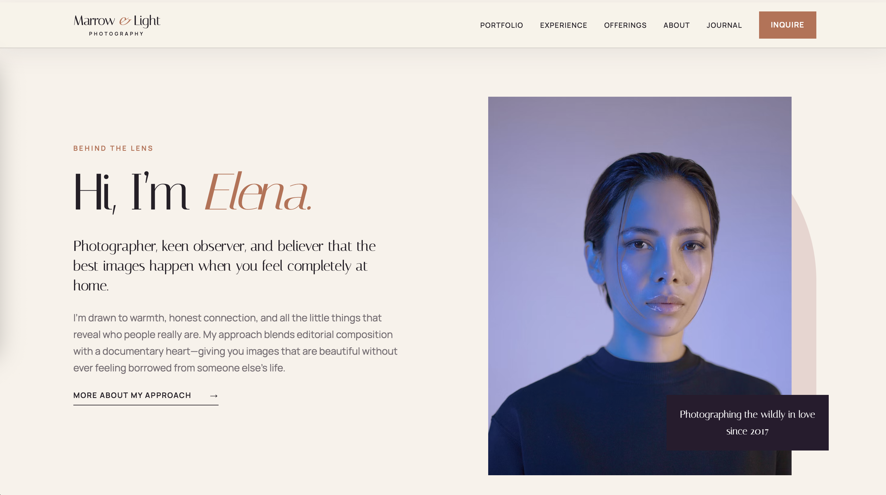
Brand story, imagery, and proof turn a polished design into something customers remember.
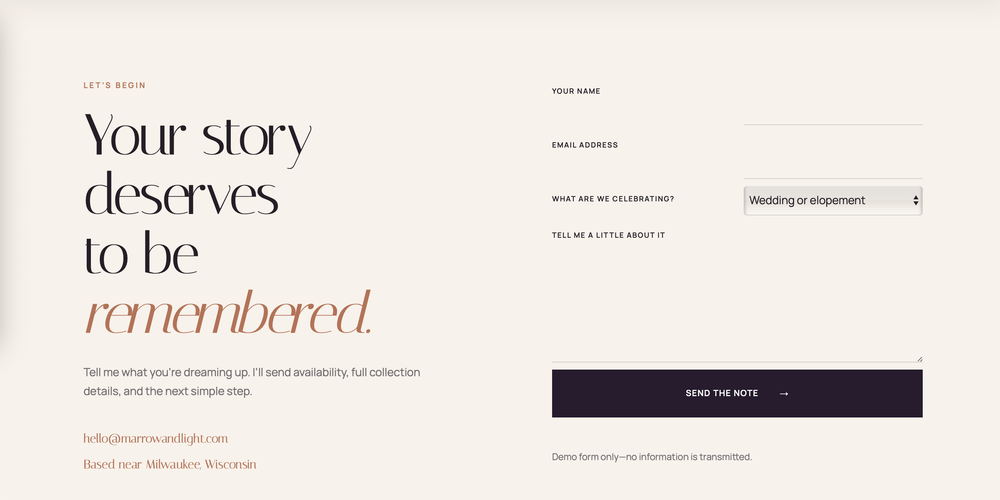
The experience closes with one obvious next step instead of leaving the visitor wondering what to do.
Start a Project
Tell me what your business does, what you need the site to accomplish, and where the current website is falling short.
Start Your Website View Photography